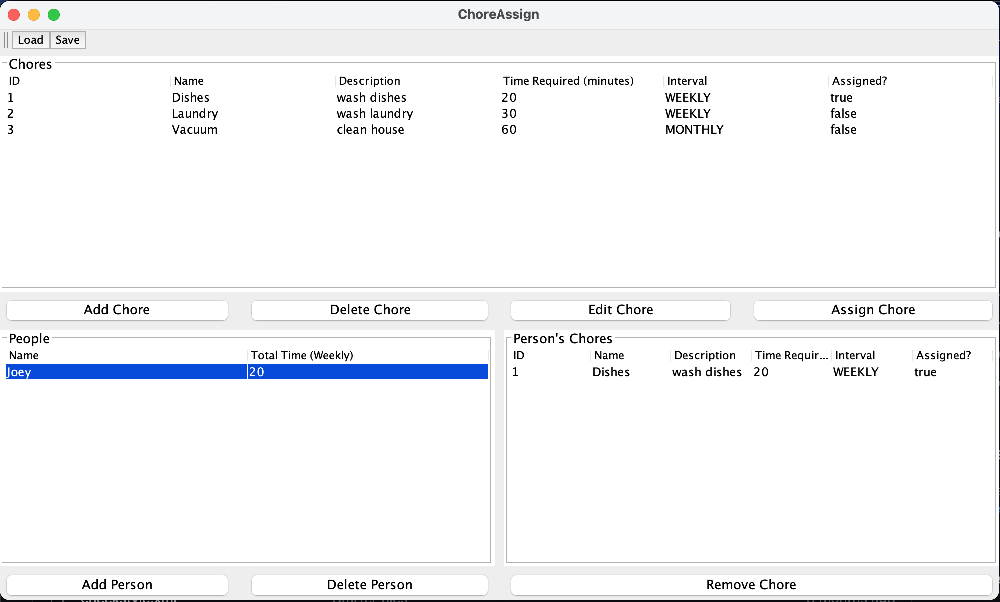
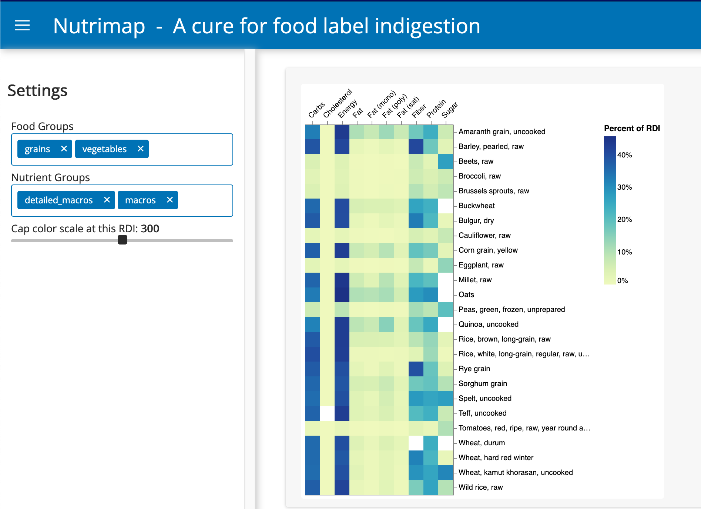
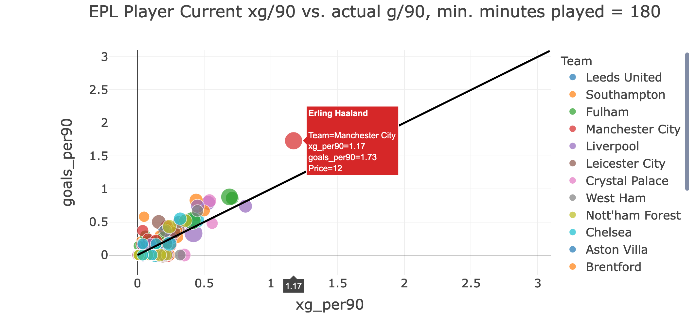

Projects

ChoreAssign
A desktop application for managing household chores. Built in Java with a Swing GUI using test-driven development and object-oriented programming principles.
See Repository

Nutrimap
The cure for food label indigestion. A web app for comparing nutritional profiles of foods and finding nutritionally-similar substitutes. Built in Python using SciKitLearn for PCA and clustering.
See Repository See Demonstration

PredictFPL
An in-progress tool for predicting Fantasy Premier League player points. Built in Python and uses SciKitLearn for regression modelling using data from the Fantasy PL API.
See RepositoryKNN Fraud Detection
Classifying fraudulent companies for financial auditing purposes using k-nearest neighbours (KNN) classification in R based on data published by Hooda et al. (2018). Classifies fraudulent companies with 85% accuracy.
See Repository